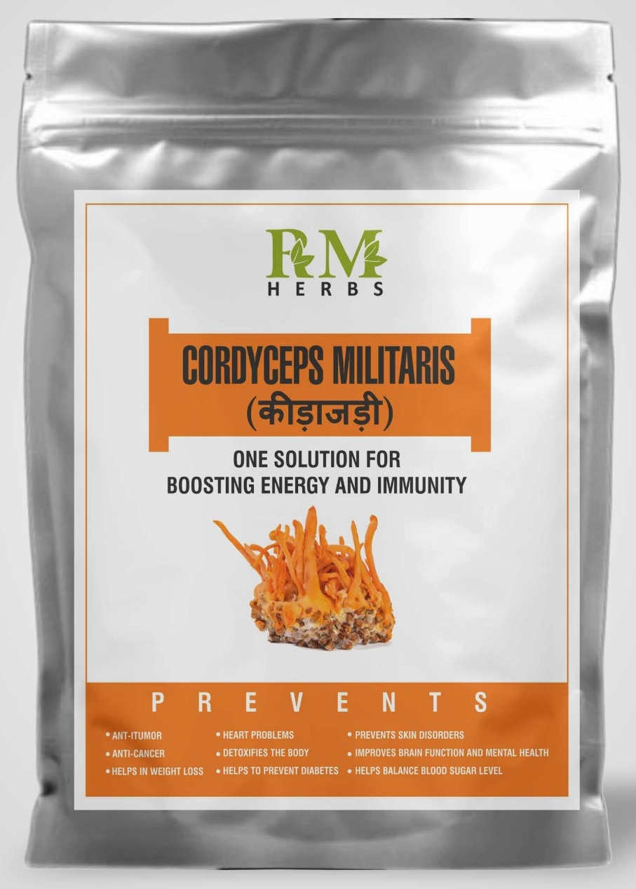

The Power of Cordyceps Militaris
Experience the natural health benefits of this remarkable mushroom.
Shop NowAbout Cordyceps Militaris
Cordyceps Militaris is a rare and valuable medicinal mushroom known for its numerous health benefits. It has been used in traditional Chinese medicine for centuries and is now gaining popularity worldwide.
Boosts Energy
Cordyceps Militaris can help increase energy levels and reduce fatigue.
Supports Immunity
It contains compounds that can help strengthen the immune system.
Enhances Performance
Cordyceps Militaris may improve athletic performance and endurance.
Our Cordyceps Militaris Product

Cordyceps Militaris ( कीड़ा जड़ी )
One solution for boosting energy and immunity.
Product Description
- Cordyceps militaris give relief in asthma sugar kidney patients.
- Energy Booster: One of the active ingredients of Cordyceps Militaris mushroom, adenosine and cordycepin play key Role in Increasing ATP Production and profoundly improving health, longevity, vitality, and physical performance.
- Anti-inflammatory and Antioxidant properties make it one of the most effective mushrooms available.
- Enhances Immunity, Strength and Energy.
Frequently Asked Questions
Cordyceps Militaris is renowned for its ability to boost immunity function, making it a potent ally in maintaining overall health. It helps to balance blood sugar levels, which is essential for preventing and managing diabetes. Additionally, it has anti-cancer benefits and anti-tumor properties, making it a valuable supplement in supporting long-term wellness.
This powerful fungus also contributes to improved heart health and cholesterol reduction, which are vital for cardiovascular well-being. It helps in detoxifying the body and reducing skin problems, promoting a clearer and healthier complexion. Moreover, Cordyceps Militaris is known to increase energy levels and improve brain function, enhancing both physical and mental performance.
For those concerned with reproductive health, it is worth noting that Cordyceps Militaris may reduce the risk of infertility. It also supports weight loss efforts and helps individuals cope with depression by balancing mood and energy levels. Furthermore, its ability to support multiple organ function underscores its role as a comprehensive health supplement.
- ➤ Prepare the Ingredients: Gather 6-8 Cordyceps fruit bodies.
- ➤ Measure the Water: Pour 200-250 ml of water into a pot.
- ➤ Boil: Add the Cordyceps to the water and bring to a boil. Keep boiling for 1 minute.
- ➤ Simmer: Reduce the heat to the lowest setting, cover the pot with a lid, and let it simmer for 14-15 minutes.
- ➤ Serve: Enjoy your Cordyceps tea, ideally after meals.
- ➤ Frequency: For best results, consume the tea twice daily.